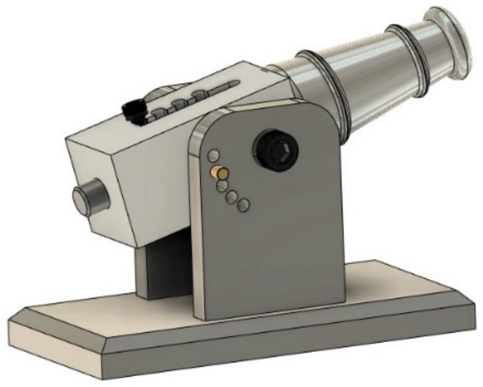
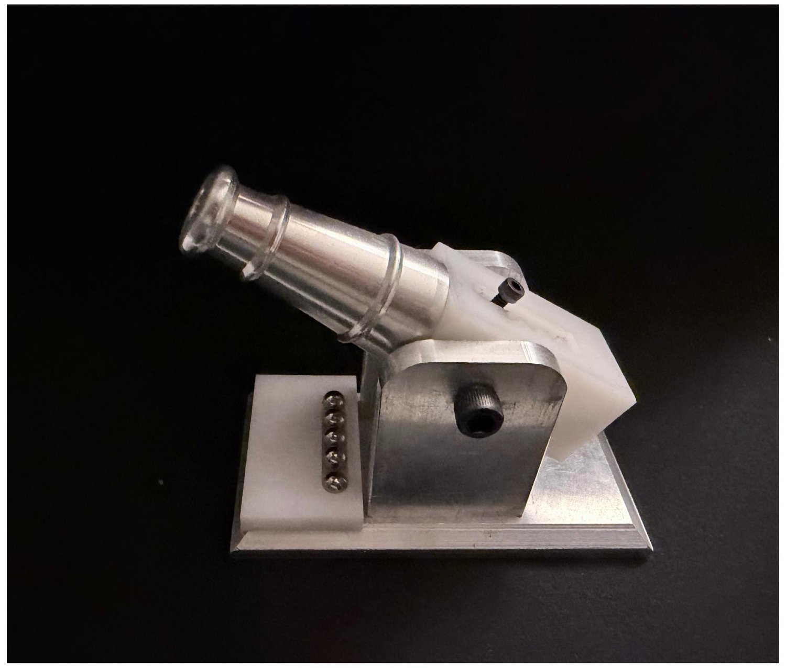
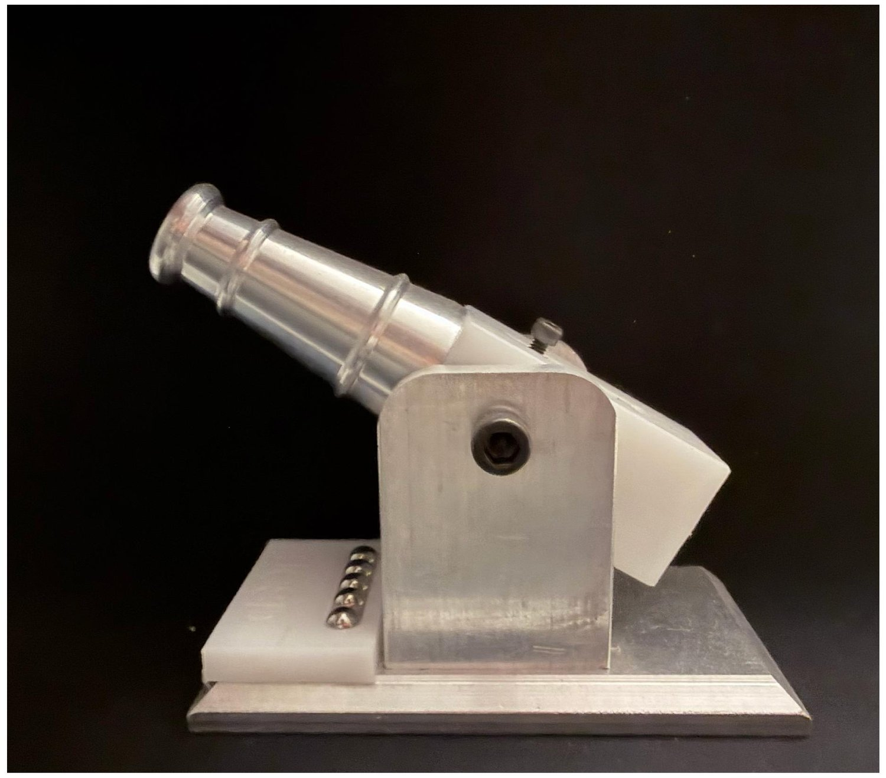
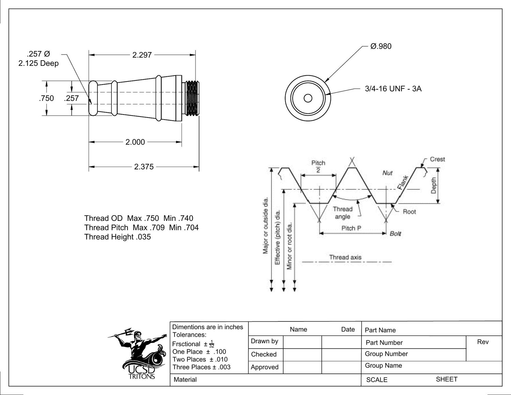

Machine Shop Project · UC San Diego
A working scale cannon machined from solid aluminum. This is where I learned to take a part the whole way, from a CAD model and a dimensioned drawing to finished metal.
The brief was simple to say and not simple to do: design and manufacture a small working cannon. It doubled as a crash course in the whole make-a-part workflow.
We modeled every component in SolidWorks, produced a dimensioned and toleranced engineering drawing for each one, then machined them from aluminum and assembled the finished piece. It is small, but everything that goes into a real machined assembly is in there: turning, milling, drilling, tapping, threading, and fits that actually have to line up at the end. It is the project that turned CAD from a drawing tool into something I could hold.
Four main pieces, each drawn and made to spec.
Lathe
A tapered barrel turned from aluminum round stock and bored down the center, with a 3/4-16 UNF thread cut on the breech end to take the cap.
CNC Mill
The milled stand the barrel pivots in, with a bolt-circle of holes set every 15 degrees so the barrel angle can be pinned and changed.
CNC Mill
The base the upright bolts to, with counterbored mounting holes and a chamfered edge for a clean finish.
5-40 UNC
The pin the barrel rotates on, plus the small threaded hardware that ties the assembly together.
Every part modeled, then checked as an assembly so the fits worked before any metal was cut.
A full drawing for each part: dimensions, tolerances, threads, and finish callouts.
Turned on a manual and Tormach lathe; milled, drilled, and tapped on Haas Mini Mill and VF2.
Deburred, fit-checked, assembled, and polished into the finished cannon.
The SolidWorks assembly on the left, the machined and polished part on the right.




There is more of my work, from the MAE3 robot to the hexacopter, on the main site.